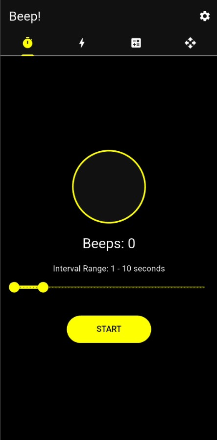
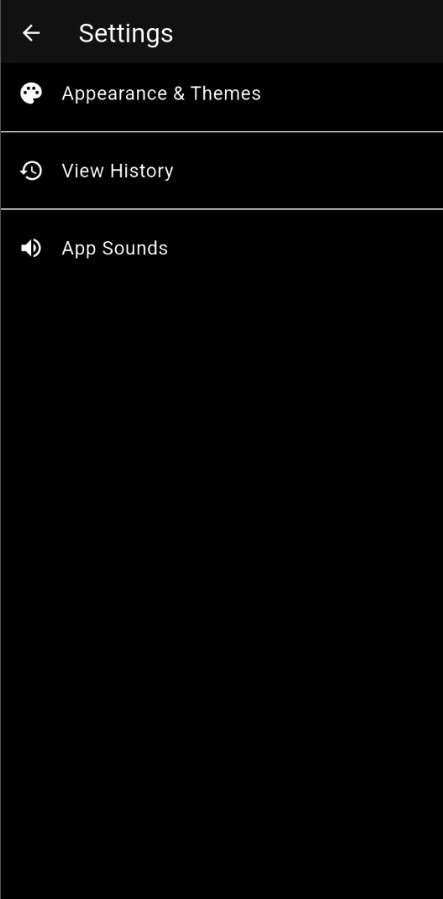

تنظیمات و شخصیسازی اپلیکیشن ⚙️
با ورود به بخش تنظیمات، محیط کاربری، افکتهای صوتی و بایگانی رکوردهات رو کاملاً شخصیسازی و مدیریت کن.


چطور وارد تنظیمات شویم؟
در هر کدام از ۴ صفحه اصلی برنامه که هستی، کافیه به گوشه بالا سمت راست نگاه کنی (مطابق فایل Screenshot_20260622_180539.jpeg). با لمس آیکون سفید چرخدنده ⚙️، بلافاصله وارد منوی اصلی تنظیمات بیپ میشی (مطابق فایل Screenshot_20260622_180559.jpeg) که شامل ۳ منوی تفکیکشده و کاربردیه. برای جزئیات هر بخش، راهنماهای زیر رو مطالعه کن.
■ زیرمجموعههای منوی تنظیمات:
۱. ظاهر و تمهای برنامه (Appearance & Themes)
تغییر و سوئیچ بین حالتهای مختلف بصری نئونی، دارک مود عمیق و لایت مود برای هماهنگی با نور محیط تمرین شما.
۲. تاریخچه و بایگانی رکوردها (View History)
مشاهده لیست زمانبندیها، رکوردهای ثبتشده، تعداد پالسها و مدیریت دیتابیس رکوردهای قبلی.
۳. صداهای برنامه (App Sounds)
انتخاب نوع بوق هشدار، تغییر فرکانسهای صوتی و فعالسازی گویندههای صوتی برای جهتها و فرامین حرکتی.